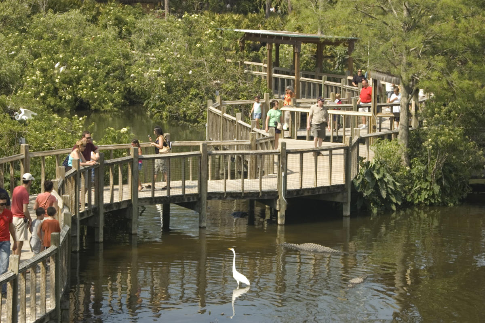

The Basics of Orlando
Orlando is one of the most popular cities to visit in America, and for many great reasons.
In 2025 alone, 76.7 million people visited Orlando, having more visitors than
even New York.
It is officially the city with the most theme parks in the
entire world, having 10 different major theme parks,
such as EPCOT, Magic Kingdom, Universal, SeaWorld, and many more.
Due to this, many dream to visit Orlando only to focus their entire trip on these theme parks.
Why try to plan for anything else, when the theme parks alone can fill an entire trip?
Why look through the many other parts of the city if it already sells itself as being THE city for theme parks?
Why waste the time you could be spending in the theme parks instead?
This perspective, which is created from the unwillingless to learn what truly makes a
city has lead to everyone seeing this one city as one note, to a place you only visit if you enjoy theme parks and nothing more.

Florida is considered one of the most beutiful states in America for a reason. It holds so many interesting locations, cultures, and environments that
simplifying it down to ONLY some of these is disrectpectful to the state itself.
Orlando Itself is a perfect example of the depth of Florida as a state. It holds such an interesting history because of how it build itself through
appealing outsiders by building on the most attractive part of itself, the theme parks, while still not fully putting down the other parts of itself
as a city. The city still has many ways to enjoy the nature of Florida, either through its many parks or nature reserves, and the environments encorporates
itself into even the theme parks, like Gatorland and Disney's Animal Kingdom.

For many planning to visit Orlando, it is a hard task finding exactly what to do past the bare minimum of simply visiting
the most popular theme parks.
This guide will help you find not only the most interesting theme parks to YOU, but also how to properly enjoy its nature and local areas of Oralndo.